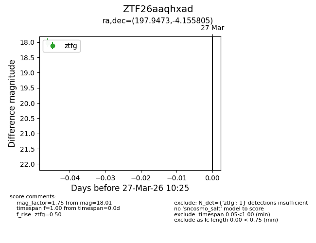
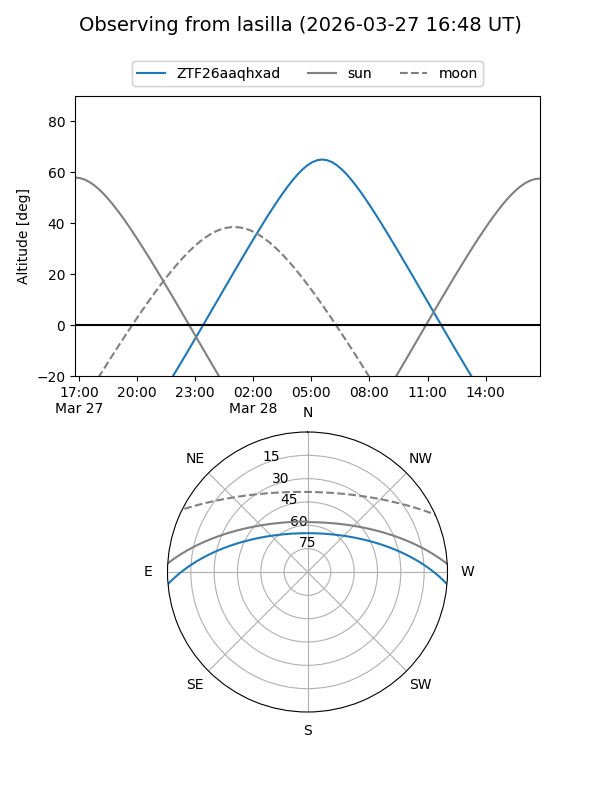
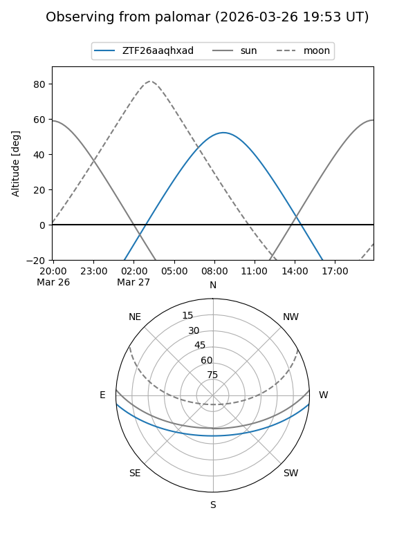

ZTF26aaqhxad
Target ZTF26aaqhxad at 2026-03-27 10:28
Aliases and brokers:
FINK: link
Lasair: link
ALeRCE: link
alt names
ZTF26aaqhxad (ztf,fink_ztf)
Coordinates:
equatorial (ra, dec) = 197.9473,-4.15580
equatorial (HMS+DMS) = 13:11:47.34,-04:09:20.90
galactic (l, b) = (312.6311,+58.33217)
Flags:
Photometry:
last ztfg=18.01
1 ztfg detections
Lightcurve

Visibility


Additional plots